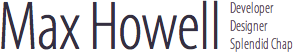

I create high-quality, polished, robust and beautiful software.
I can work to a specification, or help you write one.
I can follow your design, or create one for you.
I can manage large teams.
ASL
London; 28 years old; max@methyblue.com; http://methylblue.com
Qualifications
- MSci Chemistry (University of Bristol)
- A Levels, Chemistry: A, Design: A, German: D (Whitgift School, Croydon)
- 6th form Arkright Scholarship in Design
Also relevant; my degree's thesis (spoken) presentation was ranked, and I came top of the year.
Skills
- Qt C++ cross-platform and mobile toolkit, 8 years. I am almost certainly one of the most capable Qt developers in London, with many projects to my name and an unmatched speciality in making Mac Qt software feel mac-like. I am very well experienced in the means of developing and distributing software on multiple platforms (commonly, Windows, Mac and Linux). I also excel at ensuring the software feels as native as possible on each platform despite using a cross platform toolkit.
- Cocoa and Cocoa Touch. Good experience. I have worked on numerous Cocoa and Cocoa touch projects, in and outside of professional work over the last 3 years. I find Cocoa to be well designed and can produce excellent end-results.
- Ruby. I know Ruby inside and out, having used it for scripting, tools and my own project Homebrew.
- Java. Our team of 4 developed the Last.fm Android client in just 2 months. The work can be seen at GitHub
- I am also well versed in Git, Subversion, Python, GNU Make, Autotools, CMake and plenty of other stuff. I live on the command line.
I love learning new languages. Recently I have been learning Erlang for the Playdar project as well as Digital Mars D and Google's Go for my own interests.
Chronological Experience
Amarok — 2004 - 2006
Amarok is currently the leading music player on Linux. It is distributed as the default media player for many Linux distributions including Kubuntu. I joined the project at its inception, and was part of an eventual team of three core developers who took Amarok from obscurity to immense popularity in just two years.
At my heart I am a product designer, and I took great pleasure in shaping Amarok into a state of the art music product.
- I argued against adding features that added little or no value to the product (which by the nature of Open Source is a common event).
- I insisted on a commitment to aesthetics, whilst making sure the product continued to feel native on the multitude of different desktop environments that Amarok ships on.
- I evaluated and tested the utility and usability of the feature set, and refined the interfaces to a level of quality mostly unknown on Linux at the time.
- I managed the emerging user and developer community, teasing out feedback and directing that back into the product for both improvements to functionality and reductions in support burden. Keeping support burden low was especially important as there were only three of us trying to develop for a growing userbase already in the millions. Thus I learnt to program with a strong commitment to robustness. I believe in checking over my code several times, bugs shouldn't even get to beta testers if possible.
I left the project before development on version 1.3 began.
Evidence Talks — 2006-2007
A computer forensics company, I built various forensic tools for sale to clients using the Qt toolkit. The products sold well and were popular. The user interfaces were my design and implementation.
Last.fm — 2007 - 2009
I led the development of all Last.fm's desktop (Windows, Mac and Linux) and mobile (iPhone, Android and Blackberry) software. Our team of three developed fast, with frequent review cycles and close co-operation with the design and user experience teams. The Last.fm desktop software had a userbase of 4-5 million with 600,000 downloads a month. Successful distribution and auto-updates for such a large userbase required deep knowledge of potential problems on all platforms as well as an iron-gut.
Homebrew
A personal project I started just after leaving Last.fm, Homebrew has seen rapid and enthusiastic take up by the web development community. Currently Homebrew is the fifth most forked project on GitHub. For comparison, Ruby on Rails also is hosted at GitHub and it is the second most forked project. This progress was made in just five months.
Homebrew has been successful because I addressed a need for software on Mac, and I designed the product to be flexible, useful and very easy to contribute to. Consequently I have managed contributions from over 300 people in the last few months.
Managing large open source projects is a skill I have developed.
Work Ethic
I always have many projects on the go, both professional and personal. I am fairly well known in the online community because I have been both prolific and successful.
There is a portfolio of my recent work at my homepage.